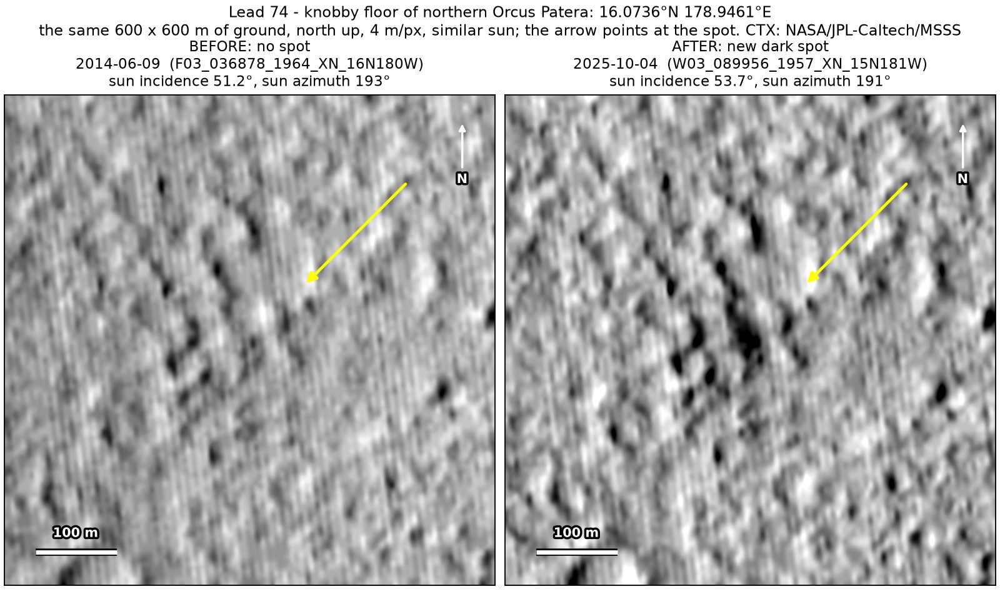
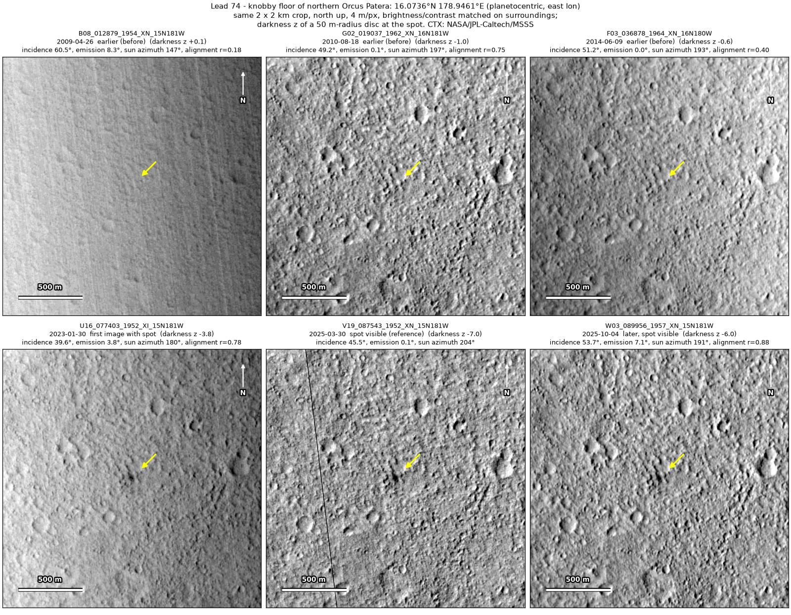
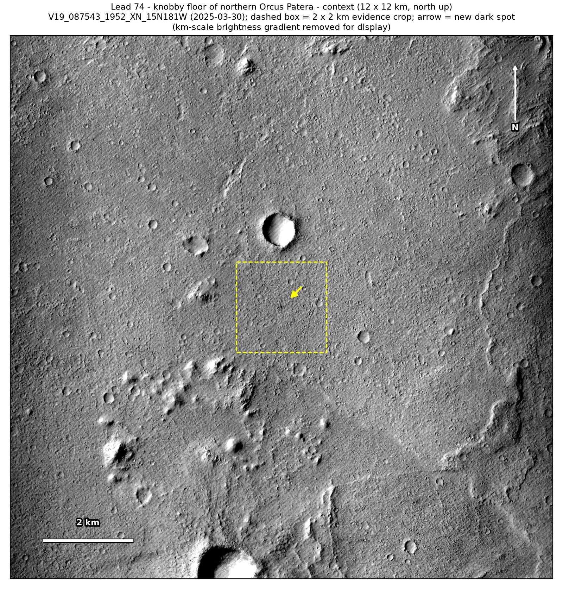
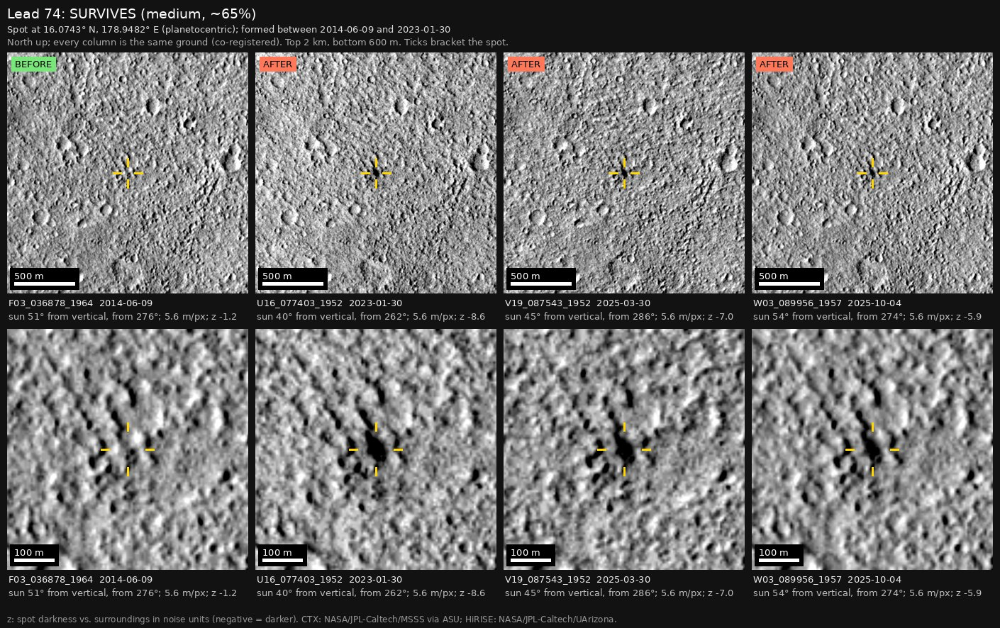

Professor of Mathematics
Paata Ivanisvili
Department of Mathematics, University of California, Irvine

← Possible new impact sites on Mars
Candidate 74: Knobby floor of northern Orcus Patera
Strong · roughly 70%

What changed. A compact dark spot about 55 m across, with fainter darkening around it, appeared on knobby ground on the floor of northern Orcus Patera, between June 2014 and January 2023, and is still there in October 2025, in three CTX images from three orbits.
Why it may be a new impact. Two earlier images, from 2010 and June 2014, show no spot there, under the same sun as the March and October 2025 images. The core is compact rather than a downslope streak, the knobs around it are small, and no streak or track of wind-blown material is visible, so a compact new dark spot like this fits the blast zone of a small new crater.
- Location
- 16.074° N, 178.946° E
- Absent
- 18 August 2010 and 9 June 2014
- Present
- 30 January 2023, 30 March 2025 and 4 October 2025
- Size
- Compact dark core about 55 m across (48 × 114 m in the March 2025 image), with fainter darkening around it
- Confidence
- Strong candidate; roughly 70% that it is a new impact.
- Caveat
- The dark feature nearby used as a check is faint in both earlier images, and the January 2023 image, under a higher sun, shows the spot less dark, so it may have darkened later. A dark slope streak (a small dust avalanche) on a knob’s flank or dark material moved by wind, both found elsewhere in Orcus Patera, remains possible. It lies within the area of a catalogue of new impacts around the InSight lander (Bickel et al. 2025), and its window overlaps the catalogue’s period, but all 123 impacts in it have HiRISE images and this spot has none. It lies outside every footprint of the high-resolution HiRISE camera; the nearest ends 10.8 km away. Like every candidate here, it is unconfirmed: see the caveat.


